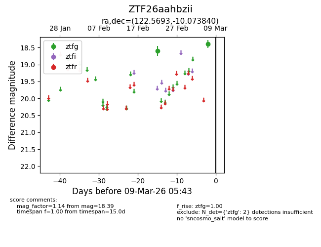
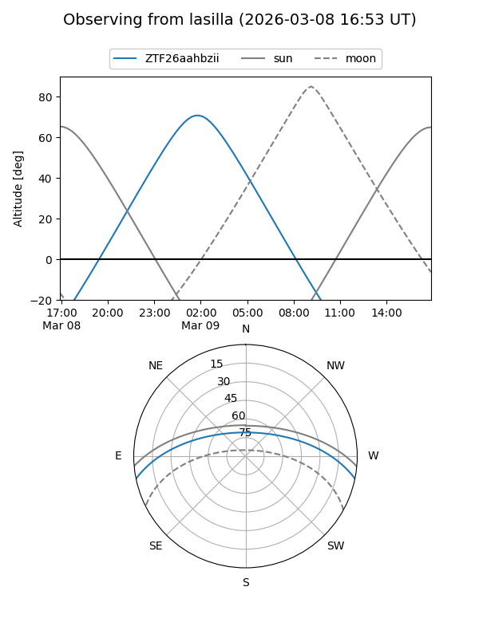
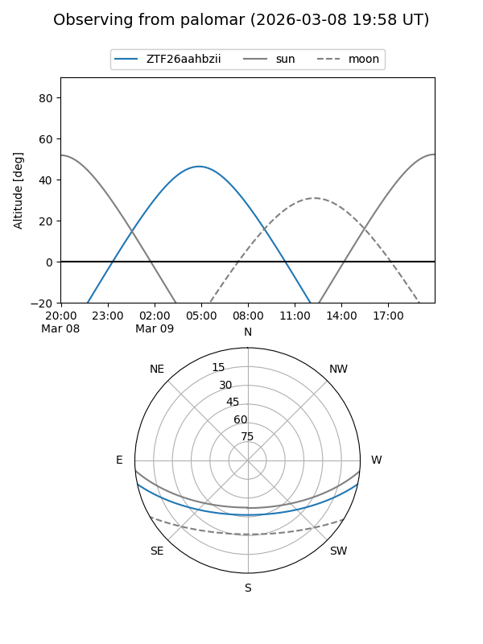

ZTF26aahbzii
Target ZTF26aahbzii at 2026-03-09 05:46
Aliases and brokers:
FINK: link
Lasair: link
ALeRCE: link
alt names
ZTF26aahbzii (ztf,fink_ztf)
Coordinates:
equatorial (ra, dec) = 122.5693,-10.07384
equatorial (HMS+DMS) = 08:10:16.62,-10:04:25.82
galactic (l, b) = (231.2622,+12.46053)
Flags:
Photometry:
last ztfg=18.39
2 ztfg detections
Lightcurve

Visibility


Additional plots